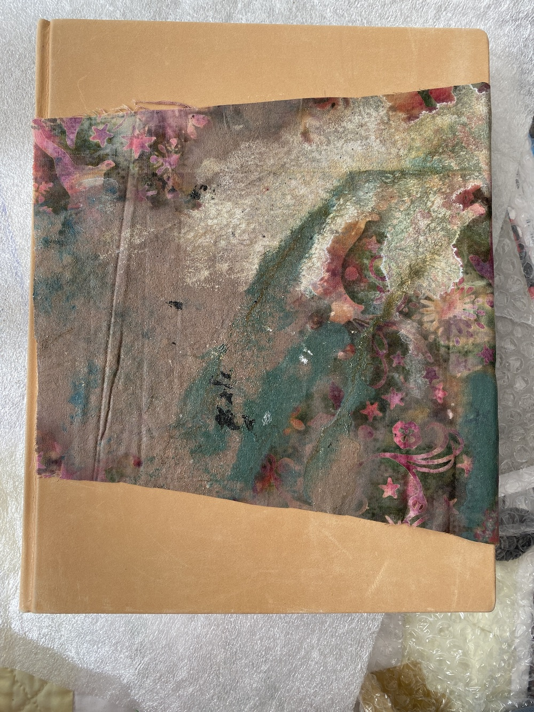
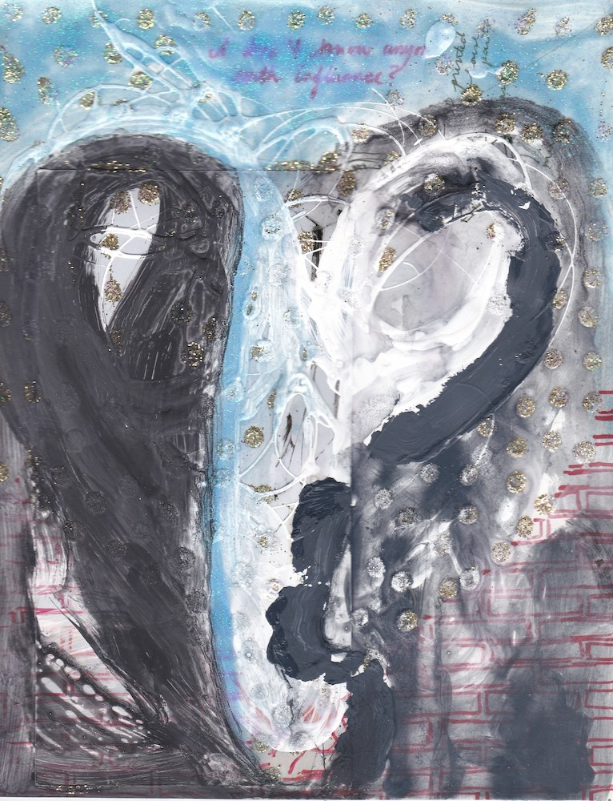
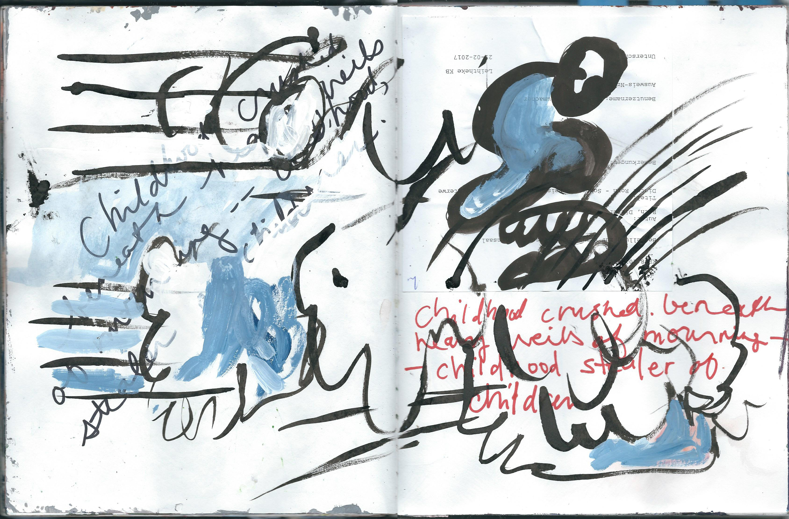

| Books |
|---|
 |
Book 05 |
||||
|---|---|---|---|---|---|
Book 04 |
 |
|||||||
|---|---|---|---|---|---|---|---|---|
| Book 03 |  | |||||||
| part of Dear St. Anthony Please Come Around, Something’s Been Lost and Cannot Be Found @Select, Berlin, April 2 - 24, 2022 | ||||||||
|  | Book 02 |
Book 01: |
 | |||
|---|---|---|---|---|
| Sons and Daughters of Analysts | ||||
| Painting Archive |
|---|
Painting Archive |

|
|||||||
|---|---|---|---|---|---|---|---|---|